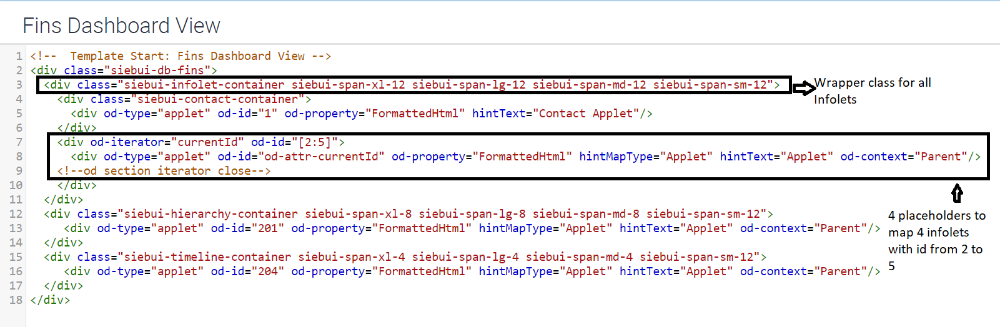
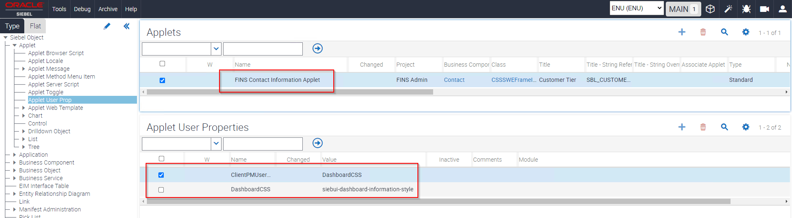
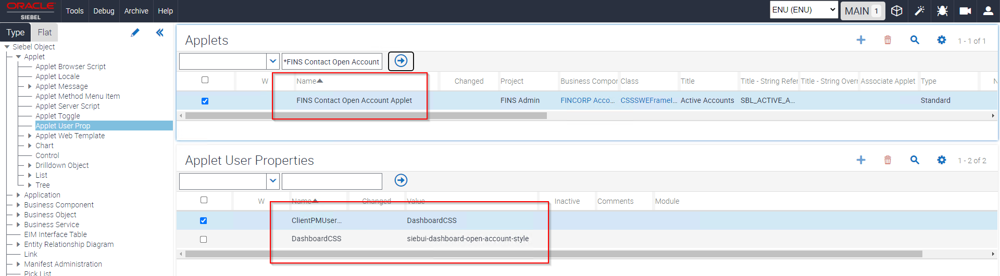

You must consider the following details about configuring dashboards to display any type of
infolets:
Mapping infolets to a view. The template file for the view on which infolets
are to be displayed must have placeholders for each infolet. As shown in the example
for Siebel Financial Services dashboard, the HTML code must be updated as
follows:
Apply the framework div class siebui-infolet-container in the view template
file.
Add placeholders for the required number of infolets.

Configuring view web template items for infolets. View web template items used
to display infolets must use the correct applet mode for the mapped applet (infolet)
to be displayed. The correct mode is shown for the applet web template in each of the
infolet configuration topics.
View template items for infolets displaying a single field value or an
aggregate value are mapped using Base mode.
View template items for form infolets and list infolets are mapped using Edit
List mode.
The four infolets that are shown in the sample FINS Dashboard view are mapped with
item identifiers 2, 3, 4, and 5, respectively.
This table lists the applet web template item for this example.
View Web Template Item
Applet Name
Infolet Type
Applet Mode
Item Identifier 2
FINS Contact Information Applet
Form Infolet with 3 field values
Edit List
Item Identifier 3
FINS Contact Open Account Applet
Infolet showing Aggregation
Base
Item Identifier 4
FINS Contact Open Request Applet
Infolet showing Aggregation
Base
Item Identifier 5
FINS Contact Offers Applet
Infolet showing list of 3 records
Edit List
Configuring custom CSS style class for infolets. You can override all styles
for an infolet based on the CSS class that is applied by the framework based on the
entity to which it is mapped.
If the infolet is based on the Contact business component, then the server framework
injects a class by name siebui-contact (siebui-<BC Name>). The server framework
also takes care of any special characters in the business component name. The
following are the some of the rules for converting the business component name to the
CSS class name:
If the business component name has a space or a special character, then it is
converted to "-" (dash).
If there are multiple special characters or spaces, one after the other, then
all special characters and spaces are removed and only a single dash is
substituted.
The entire name is converted to lower-case letters.
For example, assume a business component named Comm Package Item.Sequence Number
(Sequence). The CSS styling implementation for this business component can be done as
follows:
Adding a new CSS class through configuration. If two infolets are based on the
same business component, then you can apply or override the styling on the applets by
providing a new CSS class in an applet user property. For example, the following
applet user properties must be configured for the infolet applet. This configuration
is common for any type of infolet.
On a newly created applet, navigate to Applet User Prop. Create the following new
records with the respective CSS class.
This table lists the applet user properties you create for adding a new CSS
class.
Name
Value
ClientPMUserProp
DashboardCSS
DashboardCSS
<Custom CSS class to be added>
The following examples show configuration for adding a new CSS class:


The following figure shows the new CSS class added on top of the existing style
class.